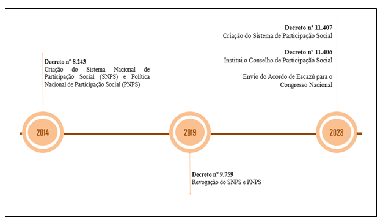

Políticas públicas de participação social no Brasil: instrumentos e contradições do governo federal
Introdução
Silva, Barbosa, e Hanai (2021) esclarecem que a participação popular deliberativa na defesa ambiental é condição necessária, no que diz o Artigo 1º da Constituição Federal, onde se estabelece que “todo o poder emana do povo, que o exerce por meio de representantes eleitos ou diretamente, nos termos desta Constituição”. Assim, para os autores, é imprescindível fomentar a participação popular na defesa ambiental.
A participação popular se deflagra, portanto, como elemento central no Estado Democrático de Direito, contribuindo para uma limitação da ação econômica sobre o meio ambiente e a busca pela reparação, justamente pelo fato de que as populações mais vulneráveis socioeconomicamente (Narciso; Bernardi, 2021) são aquelas mais atingidas.
As fronteiras avançam sobre povos e comunidades situadas em ambientes naturais, revestidos de alta complexidade ambiental, dada as violações aos direitos, aos modos de vida e à dignidade dessas pessoas. De acordo com Assis (2021), a resistência e os movimentos dos povos vulneráveis são também importantes elementos políticos, que escancara a “complacência estatal” com a degradação ambiental.
Para Assis (2021), o Estado Socioambiental de Direito tem em seu cerne a diligência da justiça ambiental, que se alcança por meio de uma política de meio ambiente que inclui elementos, desafios e enfrentamentos que são levados ao conhecimento da justiça por meio das narrativas populares e experiências históricas.
Nesse processo, reconhece-se que a injustiça ambiental inclui as desigualdades sociais, não permitindo a separação entre ambiente e sociedade. É na busca pela justiça ambiental que se procura eliminar a discriminação ambiental, fazendo com que não se reproduza seletividade ou exclusão na tutela do ambiente (Assis, 2021). Para transpassar a realidade do racismo ou seletividade ambiental, a participação popular em matéria ambiental torna-se, portanto, um mecanismo essencial no processo.
Na perspectiva nacional, a participação popular é contemplada por diversos instrumentos do ordenamento jurídico, especialmente pela Constituição Federal de 1988, que é alcunhada como “Constituição Cidadã” por ampliar a importância da participação social (Silva; Barbosa; Hanai, 2021).
No tocante à participação ambiental, Silva, Barbosa e Hanai (2021) destacam o Artigo 225 da Constituição Federal, o qual, além de reconhecer que todos os brasileiros têm o direito ao meio ambiente saudável, ainda estabelece a coresponsabilidade entre o Estado e sociedade civil, como se observa:
“Todos têm direito ao meio ambiente ecologicamente equilibrado, bem de uso comum do povo e essencial à sadia qualidade de vida, impondo-se ao Poder Público e à coletividade o dever de defendê-lo e preservá-lo para as presentes e futuras gerações” (Brasil, 2024).
Além da tutela compartilhada, Silva, Barbosa e Hanai (2021) destacam ainda que o referido Artigo estabelece duas medidas no tocante à participação, sendo: o dever de educação ambiental (art. 225, § 1º, inc. VI) e o dever de publicidade dos estudos prévios de impacto ambiental 52 (art. 225, § 1º, inc. IV).
Os autores lembram também a importância das Conferências Nacionais de Meio Ambiente na promoção da participação em matéria ambiental. As conferências foram realizadas entre os anos de 2003 e 2013 para discussão de temas ambientais importantes na perspectiva nacional, como mudanças climáticas e resíduos sólidos (MMA Brasil, 2024; Silva; Barbosa; Hanai, 2021).
Outro mecanismo significativo de gestão participativa do meio ambiente é o Conselho Nacional de Meio Ambiente (CONAMA), órgão colegiado de ação consultiva e deliberativa (MMA Brasil, 2024). Sobre o CONAMA, Silva, Barbosa e Hanai (2021) alertam que o conselho se encontra em processo de esvaziamento, contando atualmente com apenas seis cadeiras para a sociedade civil. Anteriormente, com 108 conselheiros, dos quais 20% eram da sociedade civil, o CONAMA teve a sua expressividade reduzida drasticamente, possuindo atualmente 23 cadeiras (Silva; Barbosa; Hanai, 2021). A diminuição da força e expressividade desse fórum ambiental participativo foi um dos projetos de sufocamento da participação social e da democracia durante o governo de extrema direita, entre 2018 e 2022, cujos desdobramentos serão retomados mais à frente.
Na ordem global, a participação ambiental é reforçada por meio de tratados internacionais, na forma de acordos e protocolos, que são discutidos por meio de conferências e eventos internacionais, liderados pelas Nações Unidas.
As conferências internacionais em meio ambiente ganham importância aqui uma vez que tais eventos traduzem-se como espaços de debates globais, entre Estados de todo o mundo sobre os desafios ambientais. Historicamente, esses eventos produziram importantes instrumentos de ordenamento jurídico ambiental [ou com intenção de].
A presente pesquisa, por meio de levantamento bibliográfico e documental apresenta um panorama das iniciativas de implementação ou de desregulamentação da participação social como políticas públicas do Estado brasileiro.
Resultados e Discussão
A Rio-92 realizou uma revisão dos princípios estipulados em Estocolmo e apresentou 27 princípios norteadores na busca de melhor desempenho ambiental, dentre os quais, destaca-se o princípio 10, que estipula a participação popular como mecanismo necessário para a gestão dos recursos naturais, assim como o acesso à informação e à justiça ambiental:
“O melhor modo de tratar as questões ambientais é com a participação de todos os cidadãos interessados, em vários níveis. No plano nacional, toda pessoa deverá ter acesso adequado à informação sobre o ambiente de que dispõem as autoridades públicas, incluída a informação sobre os materiais e as atividades que oferecem perigo a suas comunidades, assim como a oportunidade de participar dos processos de adoção de decisões. Os Estados deverão facilitar e fomentar a sensibilização e a participação do público, colocando a informação à disposição de todos. Deverá ser proporcionado acesso efetivo aos procedimentos judiciais e administrativos, entre os quais o ressarcimento de danos e recursos pertinentes” (Nações Unidas, 2024; CEPAL, 2024; Brasil, 2017).
Nota-se que o princípio 10 da Declaração da Rio-92, além de inserir a sociedade civil na tutela do meio ambiente juntamente com o Estado, ressalta ainda os três elementos centrais da democracia ambiental, sendo: 1) Acesso à informação; 2) Acesso à participação; 3) Acesso à justiça. A inserção da participação popular como elemento indispensável para a gestão ambiental, segundo Ruviaro (2023), demonstra uma governança ambiental baseada na participação de todos os cidadãos, que exige mais transparência dos Estados, podendo contribuir para a construção de uma confiabilidade pública, que atualmente é o ponto crítico da democracia – a falta de confiança dos cidadãos no Poder Público. A pesquisa empreendida junto à população local em Parauapebas revela que a população não confia no Poder Executivo Municipal, sendo 55,35% dos respondentes e, ainda, 11,61% veem com indiferença, o que também é alarmante.
Essas diretrizes inscritas no instrumento gerado pela conferência do Rio de Janeiro receberam destaque e importância, uma vez que estabelecem a necessidade de atuação em direção à justiça e à democracia socioambiental. O “Princípio 10” encorajou a criação de outros instrumentos e mecanismos para ampliação da defesa da democracia ambiental, especialmente pelos países da América Latina e Caribe, que reuniram-se para a elaboração de um instrumento regional e condizente com as suas realidades à partir da Conferência Rio +20.
A “Declaração do Rio sobre Meio Ambiente e Desenvolvimento”, documento que sintetizou os debates e providências da Conferência, apresentou também a “Declaração sobre a aplicação do Princípio 10”, marcando o início da construção do “Acordo de Escazú”, como ficou amplamente conhecido o instrumento de institucionalização e operacionalização do Princípio 10 (Rank; López, 2023).
Barroso e Mello (2023) ressaltam que trata-se do primeiro instrumento no mundo a incluir diretrizes de proteção à ativistas ambientais, coadunando com uma preocupação do Estado de Direito Socioambiental. Além disso, o Acordo apresenta um conjunto de direitos processuais como direitos de acesso em questões ambientais. Ao pormenorizar os acessos em matéria ambiental, o Acordo promove a responsabilização democrática e o controle dos atos do poder público, propiciando a democracia ambiental e uma “institucionalidade multinível” (Barroso e Mello, 2023).
Para Ruviaro (2023), o Acordo de Escazú apresenta um novo parâmetro em governança ambiental, com maior transparência sobre as reivindicações de povos tradicionais, uma vez que estes povos participam do processo. Para o autor, a importância desse instrumento ambiental é melhor compreendido se atentado para ambientes de alta complexidade, como territórios de mineração na América Latina.
Ademais, o Brasil, além de possuir condições ambientais complexas, como o avanço das fronteiras econômicas sobre a Amazônia e outros domínios fitogeográficos, é um dos países que participou da elaboração do instrumento e membro da CEPAL – fatores que serão retomados mais adiante. Posto isso, a seguir apresenta-se um esboço sobre a estrutura do “Acordo Regional sobre Acesso à Informação, Participação Pública e Acesso à Justiça em Assuntos Ambientais na América Latina e no Caribe – O Acordo de Escazú”.
O Artigo 7º trata da participação popular nos processos ambientais, cujo item 1 expressa que cada Estado deve assegurar o direito de participação, comprometendo-se a implementar uma participação “aberta e inclusiva”. O item 4 do Artigo 7º estabelece que cada Estado parte deverá proporcionar a informação necessária para viabilizar a participação e, para isso, a informação deve ser clara, oportuna e compreensível. E ainda, estabelece que o processo de manifestação popular deve ser considerada antes de ser proferida a decisão. O item 10 do referido artigo ressalta ainda que o processo de participação social deverá atentar-se às condições estruturais da população, ou seja, às características sociais, econômicas, culturais, geográficas e, inclusive, de gênero. O item 14 ressalta uma a obrigação dos Estados de atuar na superação de um problema clássico de acesso em países com economia extrativista, que é a necessidade de envolver os públicos mais vulneráveis e garantir a sua “efetiva” participação. Para isso, espera-se a adoção de diferentes meios e mecanismos, com a finalidade de eliminar as barreiras existentes (Nações Unidas, 2024; CEPAL, 2024).
No Artigo 10 do Acordo, destaca-se o “Fortalecimento de capacidades”, que reforça a responsabilidade de cada país na criação de estruturas e esforços para a implementação nacional, no qual ressalta “A fim de contribuir para a implementação das disposições do presente Acordo, cada Parte compromete-se a criar e fortalecer as capacidades nacionais, com base em suas prioridades e necessidades”.
Entre os esforços nacionais destacados no Artigo 10, é importante observar que o instrumento reforça a necessidade de fortalecimento de movimentos sociais e atores da sociedade civil, que sabidamente, são defensores dos direitos de acesso e agentes de difusão. Isso expressa-se em “reconhecer a importância das associações, das organizações e dos grupos que contribuem para formar ou conscientizar o público sobre os direitos de acesso”.
E ainda, o Artigo 13 “implementação nacional” determina que cada país deverá se comprometer com a facilitação de meios de implementação em nível nacional para cumprimento das obrigações do Acordo (CEPAL, 2024).
No âmbito da implementação desse importante instrumento de garantias de acessos em matéria ambiental, é importante notar que 25 países assinaram o Acordo quando da sua finalização, em 2018 e meados disso, incluindo o Brasil.
Entretanto, nem todos os países ratificaram a sua adesão, assim como não efetivaram a aderência e entrada no Acordo. Dez países não ratificaram a sua adesão e não ainda não aderiram ao instrumento, entre eles, o Brasil, conforme apontado pelo “Observatório do Princípio 10” (CEPAL, 2024).
Embora o Brasil tenha sido um dos países que participou das mesas de elaboração do instrumento, o governo federal não ratificou a sua adesão, tão pouco prosseguiu com a criação de estrutura e esforços para a sua implementação e efetivação.
Passados mais de cinco anos da assinatura do Acordo, em maio de 2023, o Ministério do Meio Ambiente e Mudança do Clima (MMA) noticiou o envio do Acordo de Escazú para aprovação do Congresso Nacional. Na matéria publicada em sua página na internet, o Ministério anunciou: “Assinado pelo Brasil em 2018, primeiro tratado regional com foco em meio ambiente e direitos humanos foi paralisado no governo anterior”. A publicação inclui ainda uma declaração da Ministra de Meio Ambiente, Marina Silva: “O Brasil sairá de”observador passivo” nos últimos quatro anos para “implementador ativo” do tratado.
Nesta fala, após citar o aumento de crimes contra ativistas ambientais, a ministra observa a postura do governo federal sob a gestão de Jair Bolsonaro especificamente no tocante ao Acordo de Escazú, o qual fora preterido. Atualmente, o tratado tramita no Congresso Nacional desde janeiro de 2023, registrado no sistema como “prioridade” e encontra-se em apreciação pelos ministérios envolvidos.
É importante lembrar que não é acaso ou fato isolado que um tratado internacional de fortalecimento de garantias de direitos de acesso em matéria ambiental tenha sido negligenciado e esquecido pelo governo federal após a assinatura do Acordo em 2018.
A omissão do Poder Público nesse caso não se trata de inação, e sim de mais uma prática de desregulamentação ambiental, como tantas outras que marcaram o governo de extrema direita ao qual o Brasil esteve submetido entre 2018 e 2022.
Barros (2022) ressalta que após a posse de Bolsonaro em 2018, o Brasil assistiu “numa velocidade impressionante ao desmoronamento do pacto de direitos edificado na Constituição Federal”, referindo-se à atuação do governo federal na desmobilização de direitos ambientais e direitos humanos. A autora reforça a atuação do governo no campo ambiental, para o que ela chama de “abandono completo de referências legais e institucionais” do Estado brasileiro, em oratórias contra o meio ambiente.
Para a lógica do governo bolsonarista, os controles de fiscalização ambiental são “indústria de multagem” e o desmatamento se legaliza como sendo sinônimo de atividade de “homem do campo”, (referindo-se aos latifundiários e nada tinha a ver com o homem do campo), no qual entende-se como pequenos e médios produtores (Barros, 2022).
Barros (2022) ressalta ainda que a atuação do mandatário de extrema direita seguiu na negação às mudanças do clima e no rebate às críticas internacionais à política ambiental brasileira, cuja ação mais eficaz produzira aumento do desmatamento na Amazônia, acusando a mídia estrangeira e outros países de “conspiracionistas”.
A implausível atuação do [des]governo federal entre 2018-2022 incluiu ainda a negação de direitos indígenas e quilombolas e a estratégia de ocupação dos órgãos indígenas e ambientais por ruralistas, pastores e militares. Assim, nesse período, aumentaram as violências e homicídios de lideranças indígenas (Barros, 2022).
Em meio à pandemia de Covid-19, o ministro do meio-ambiente do governo de Jair Bolsonaro, em reunião oficial, proferiu a célebre expressão: “é hora de passar a boiada”, referindo-se ao momento de atenção à saúde pública para providenciar a desregulamentação ambiental e aprovação de medidas infralegais, pois, para eles aquele seria o momento para aprovação de legislações, decretos e dispositivos jurídicos controversos sem a atenção da mídia e da sociedade (Barros, 2022; Alessi, 2020; Menegassi, 2021).
A lógica da ilegalidade e de desregulamentação na atuação do Governo Federal, com pano de fundo de uma orientação do neoliberalismo permeou o ataque ao projeto nacional de participação popular.
A participação social enquanto instituição democrática foi planejadamente enfraquecida em diversas ações. A atuação sistemática do governo federal na desconstrução de mecanismos de participação permite afirmar que se tratou de um plano orquestrado de desconstrução da democracia [tentativa].
Em 2020, em meio à uma crise sociopolítica que já se agravava (Santos; Silveira, 2021), a postura negligente do governo federal com a saúde pública e o meio ambiente corroborou para um cenário tenso, com relações institucionais de alta complexidade e instabilidade no combate à pandemia de covid-19.
Com o agravamento deste ambiente, em decorrência do aumento da letalidade de covid-19, e considerando ainda as polêmicas envolvendo a regulamentação ambiental, com iniciativas de afrouxamento das medidas de fiscalização, além da tensão entre o governo federal e as universidades públicas, com sistemáticos cortes orçamentários.
O governo de extrema direita desse período destacou-se na história do Brasil pelos ataques às instituições democráticas e o perigo produzido ao Estado Democrático e Direito, ainda que tenha sido eleito democraticamente.
A sociedade civil organizada e os movimentos sociais tiveram importante atuação no enfrentamento às medidas antidemocráticas produzidas pelo [des]governo [militar] de Jair Bolsonaro (Barros, 2022).
A campanha denominada de “Brasil pela Democracia, Brasil pela vida” representou um manifesto que contou com a assinatura de mais de 70 organizações do terceiro setor, incluindo movimentos sociais, ONGs e sindicatos (OAB Nacional, 2020; Campos, 2020; Ethos, 2020; Behs, 2020; Programa Cidades Sustentáveis, 2020; Arcanjo, 2020).
Segundo Mariana Campos, representante do Greenpeace Brasil, o manifesto, que se posicionou de forma contundente contra as ações negacionistas do governo federal, denunciou “o ataque permanente e inconcebível às instituições, à imprensa, ao Estado Democrático de Direito e aos direitos dos cidadãos e cidadãs garantidos pela Constituição Federal”. Neste sentido, os movimentos sociais tiveram papel determinante na defesa da democracia e dos direitos constitucionais frente às ações de violações do Estado. Para ela, passados mais de 30 anos da promulgação da Constituição Federal, em 2020 observou-se o desrespeito aos direitos constitucionais, como aos povos originários e ao meio ambiente.
O manifesto foi motivado ainda pela “incompetência e insensibilidade” do governo federal no combate à pandemia do Coronavírus, causando agravamento da situação crítica de povos e comunidades tradicionais em relação aos direitos fundamentais e coletivos (Santos, 2021).
Na carta de lançamento, as organizações afirmaram que o Brasil “deve se pautar pela legalidade, moralidade e eficiência na gestão pública e pelos objetivos fundamentais de construir uma sociedade livre, justa, sustentável e solidária, garantindo o desenvolvimento nacional, erradicando a pobreza e a marginalização, reduzindo as desigualdades sociais de gênero e regionais, promovendo o bem de todos e todas, sem violência e preconceitos de origem, raça, sexo, cor, idade ou quaisquer outras formas de discriminação”.
Segundo Santos (2021), a democracia é “condição indispensável” para a luta pela preservação ambiental e da vida. “Sem a democracia, não é possível o trabalho das organizações na luta ambiental, que sofreu grandes retrocessos no governo de Jair Bolsonaro, como a fragilização dos órgãos de preservação e proteção ambiental, com redução da autonomia de servidores e desmobilização do controle e fiscalização.
Marques (2020) enfatiza a força dos movimentos sociais, representada no manifesto “Brasil pela Democracia, Brasil pela vida”, afirmando que “onde há retrocesso, há resistência”. E pondera ainda “o nosso direito de existir em uma sociedade multiétnica e multicultural, e nosso direito a um meio ambiente ecologicamente equilibrado, valem qualquer esforço”.
O levantamento documental desta pesquisa incluiu um ofício datado de abril de 2019 e assinado pelo Ministro da Casa Civil solicitava a extinção de colegiados no âmbito do Poder Público Federal, alegando a racionalização administrativa e para “controlar a incrível proliferação de colegiados”. O documento cita ainda que os colegiados criam “problemas muito mais graves”, como a apreciação e aprovação de pautas que não seriam de interesse do governo, exemplificando que “grupos de pressão, tanto internos como externos à administração, que se utilizam de colegiados, com composição e modo de ação direcionado, para tentar emplacar pleitos que não estão conforme a linha das autoridades eleitas democraticamente".
Um ponto ainda mais crítico do referido ofício é evidenciado na solicitação de revogação da Política Nacional de Participação Social (PNPS) e o Sistema Nacional de Participação Social (SNPS), que haviam sido criados pelo Decreto nº 8.243 de 2014, no governo de Dilma Rousseff.
Segundo o Ministro da Casa Civil, o SNPS visava estimular o “fortalecimento de colegiados por grupos políticos específicos para se contrapor ao poder das autoridades eleitas [...]”. Nessa sentença, evidencia-se que o governo federal elegia a participação social, por meio de seus mecanismos e instrumentos, como perigo eminente para os seus objetivos.
Encerrando o incredível ofício destinado à Presidência da República, o Ministro da Casa Civil denomina de “verdadeira aberração” os colegiados no âmbito federal, e que, o Decreto que criou o Sistema Nacional de Participação Social tornara-se conhecido como “Decreto Bolivariano”.
A Política Nacional de Participação Social, anteriormente criada pelo Decreto nº8.243/2014, reconheceu no seu artigo 3º que a participação social é um direito do cidadão, e ainda “expressão de sua autonomia”. O Artigo destaca ainda que a democracia participativa e direta é complementar e transversal à democracia representativa, além de prever explicitamente o aumento do controle social. É importante ressaltar ainda que, o Decreto de 2016, anterior à formulação do Acordo de Escazú, já previa no seu artigo 3º, alínea IV o direito à informação e transparência nas ações públicas. O artigo 4º define como objetivo da PNPS, em sua alínea I, “consolidar a participação social como método de governo” e na alínea III “Aprimorar a relação do governo federal com a sociedade civil, respeitando as autonomias das partes”, muito diferentemente do governo posterior que extinguiu a criação do PNPS, o qual vislumbrava a participação popular como ameaça ao totalitarismo e autoritarismo praticado.
A PNPS previa ainda em seu artigo 4º, alínea VI, o uso de redes virtuais e internet para incentivo da participação social, cujo ambiente virtual é reconhecido como fórum de participação no Artigo 6º.
Ao enveredar pela leitura do Decreto nº8.243/2014, o qual instituiu a Política Nacional de Participação Social, percebe-se que muitas questões levantadas por essa pesquisa encontram respaldo em tal instrumento, aprovado pela Presidenta Dilma Rousseff e posteriormente revogado por meio do Decreto nº9.759 de 11/04/2019, pelo Presidente Jair Bolsonaro, veiculando como justificativa o ofício do Ministro da Casa Civil, que alertava sobre os perigos que mecanismos participativos poderiam causar ao governo centralizador e autoritário.
Após a revogação da PNPS e do SNPS em 2019, somente no ano de 2023 o governo federal veio a editar atos para a retomada de iniciativas de participação social no âmbito nacional.
Em janeiro de 2023, logo após assumir a Presidência da República em seu terceiro mandato, o Presidente Luiz Inácio Lula da Silva assinou os Decretos nº11.406 e nº11.407 de 31/01/2023, que institui a criação do Conselho e do Sistema de Participação Social, respectivamente.
Em uma publicação breve, sem detalhamento e com conteúdo vago, o Decreto nº11.407 em seu Artigo 2º institui: “O Sistema de Participação Social tem por finalidade estruturar, coordenar e articular as relações do Governo federal com os diferentes segmentos da sociedade civil na aplicação das políticas públicas”.
O Decreto designa a Secretaria Geral da Presidência da República como órgão gestor da política, sem nenhuma alteração ou aditamento de informações até o início de 2024, o que pode levantar questionamentos sobre a efetividade ou intenção de tal ação.
No evento de lançamento do Conselho de Participação Social e assinatura dos decretos, o Ministro da Secretaria-Geral da Presidência da República em seu discurso reafirmou o enfraquecimento da participação social no governo anterior e lembrou ainda dos ataques à democracia brasileira à partir de 2016, com o Golpe de Estado sofrido pela presidente Dilma Rousseff. Ainda, o Ministro encarregado pelo desenvolvimento da Política de Participação Social ressaltou o trabalho que deverá ser empreendido para a participação “interministerial”, sinalizando a criação de uma “Assessoria de Participação Social” em cada ministério.
O discurso do Ministro apresenta poucos elementos que permitem entender o funcionamento do novo sistema instituído para internalizar e institucionalizar a participação social na gestão federal. Nota-se ainda que a sua fala traz elementos políticos partidários e utiliza da solenidade para pontuar a rivalidade com o governo anterior, no que se observa: “Depois de termos derrotado Bolsonaro nas urnas, vamos derrotar o bolsonarismo na sociedade. Vamos derrotar o fascismo. Precisamos discutir as políticas públicas de inclusão, distribuição de renda e diminuição da desigualdade no curso da implementação.”
De fato, a ideologia de extrema direita cultuada por Bolsonaro é uma ameaça real ao Estado Democrático de Direito e, portanto, aos direitos humanos e direitos ambientais. Contudo, aquilo que se invoca nesta reflexão é que parece, à partir do discurso do Ministro e da falta de clareza e de informações nos decretos e na página institucional sobre o novo sistema voltado à participação, é que a participação social até o momento não desdobrou-se em ações mais concretas e em um plano de como a participação popular deverá se operacionalizar além de Conferências Nacionais e de uma “Participação Interministerial”, que também pouco diz sobre o alcance dessa estrutura à sociedade civil. É importante atentar-se também ao caráter centralizador dessa nova estrutura de participação social, que institui a SGPR como órgão executor.
Em relação àquela política anterior de participação social, desenvolvida no governo Dilma Rousseff em 2014, por meio do Decreto nº8.243 de 23/05/2014, percebe-se que quase nada se aproveitou daquela que apresentava um rico detalhamento sobre o funcionamento da extinta Política Nacional de Participação Social, que esclarecia os seus objetivos, mecanismos de interlocução e os papéis de cada setor da sociedade no funcionamento da política.
Anteriormente, a revogação de colegiados e conselhos no âmbito federal e da Política Nacional de Participação Social são apenas dois exemplos de uma miríade de atos contra o Estado Democrático de Direito cometidos pelo chefe autoritário do Poder Executivo que esteve à frente do governo federal entre 2018-2022.
A revogação de colegiados e conselhos no âmbito federal e da Política Nacional de Participação Social são apenas dois exemplos de uma miríade de atos contra o Estado Democrático de Direito cometidos pelo chefe autoritário do Poder Executivo que esteve à frente do governo federal entre 2018-2022.
A Figura 1 demonstra os marcos da Participação Social no Brasil, tanto aqueles de tentativas de institucionalização, como os de ameaça à essa premissa do Estado Democrático de Direito.
Figura 1 – Marcos da Participação Social no Brasil

Fonte: Elaborado pelos autores à partir dos dados da pesquisa (2024).
No recente governo de extrema direita, os movimentos sociais tiveram papel fundamental na defesa da democracia, que fora ameaçada sistematicamente, com intenção que seria evidenciada mais tarde, no episódio de 08 de janeiro de 2023, com os atos criminosos que acometeram Brasília-DF, na tentativa de ruptura do Estado Democrático de Direito, após a eleição presidencial de um partido democrata de esquerda, o Partido dos Trabalhadores (PT).
A partir de 2018, além de ameaças e desregulamentação ambiental, Athayde Motta, diretor do IBASE, importante organização brasileira na luta pela democracia, fundada em 1981, em decorrência da luta de ativistas pela redemocratização, que estampa em sua página na internet o slogan “Só a participação cidadã é capaz de mudar o país”, ressalta que o Brasil viveu um período de “desmoralização do Estado Democrático de Direito” no qual a forma de agir no “jogo da democracia” foi muito além da defesa de interesses diversos da sociedade, como deveria ser.
O governo foi marcado, como destaca Motta (2021) por ameaças ao Supremo Tribunal Federal, incentivo à desordem pública, pedido de fechamento das instituições democráticas, intervenção militar e fechamento do Congresso Nacional. Essas manifestações, alguns defenderam como “liberdade de expressão”, o que, na verdade, são crimes contra o Estado Democrático de Direito, como prevê a Constituição Federal, inclusive ordenando o seu “absoluto cumprimento” (Motta, 2021). Segundo Motta, o IBASE entende que “um país não existe como nação se não for pela democracia”. Ele lembra ainda o papel das ONGs e movimentos sociais, engajadas em uma rede de ação no combate aos malefícios da pandemia de covid-19, especialmente em regiões periféricas e vulneráveis, uma vez que, nesse cenário de emergência de saúde pública, o Brasil passava com uma instabilidade política severa, que exigiu força para lutar contra o negacionismo.
Assis (2022), em uma leitura comparativa e crítica sobre o comportamento centralizador e totalitário de Jair Bolsonaro, particularmente na militarização de órgãos civis que marcou a sua gestão e, especialmente no âmbito desta pesquisa, na denegação pelos direitos de acesso ambientais, faz o seguinte questionamento: “O passado é uma roupa que não nos serve mais?”.
Conclusão
O presente trabalho investigou as principais ações do governo brasileiro no tocante às políticas públicas de participação social, apresentando um panorama sobre a importância atribuída à esta instituição, que é alicerce do Estado Democrático de Direito.
A pesquisa evidenciou que, apesar de diversos instrumentos legais e normativos pactuarem a essencialidade da participação popular nos mecanismos de gestão pública e na tutela do meio ambiente, ainda não é uma política pública do Estado brasileiro em 2024, apesar de ser prevista pela própria Constituição Federal de 1988, que recebeu a alcunha de “Constituição Cidadã”, justamente pelo protagonismo da participação social no período de redemocratização, os mecanismos sobressaltados na Constituição e outros instrumentos do ordenamento jurídico.
A pesquisa constata que a implementação em nível nacional fica a cargo de cada Presidente da República, recebendo impulso ou enfraquecimento, conforme a orientação política do governante. Os resultados demonstram que os maiores esforços ocorreram no ano de 2014, com a criação do Sistema Nacional de Participação Social e a Política Nacional de Participação Social, implementados por meio do Decreto nº8.243, assinado por Dilma Rousseff, sendo o instrumento mais completo e contemplativo até hoje.
Posteriormente, em 2019, o Presidente Jair Bolsonaro extinguiu as políticas e estruturas de participação social anteriormente criados, alegando que a participação e o aumento de colegiados no âmbito da Administração Pública Federal, além de elevar despesas, representariam uma “ameaça” aos interesses dos políticos eleitos.
Em 2023, após a eleição do Presidente Luiz Inácio Lula da Silva, foi criado o “Sistema de Participação Social”, assim como o “Conselho de Participação Social”, ambos com um texto vago e sem muitas informações. Além disso, a ratificação do Acordo de Escazú foi enviado para o Congresso Nacional. É importante ressaltar aqui que o referido Tratado Internacional para os países da América Latina e Caribe estabelece os esforços e obrigações dos Estados Nacionais para a institucionalização da participação social efetiva, assim como do acesso à informação e justiça.
Finalmente, o presente trabalho constatou que a participação social não é uma política pública do Estado brasileiro, o qual não possui uma estrutura de ordenamento jurídico para institucionalização dos direitos de acesso da população, como recomendado em tratados internacionais e na própria Constituição Federal.
Referências
ALESSI, G. Salles vê “oportunidade” com coronavírus para “passar de boiada” desregulação da proteção ao meio ambiente. El País, 22 de maio de 2020.
ARCANJO, D. OAB e mais de 50 entidades lançam campanha com bandeira pró-democracia e pedem união. Folha de São Paulo, 2020.
ASSIS, C. C. Democracia Ambiental e os invisíveis: rompendo as barreiras da exclusão socioambiental. Cadernos de Direito Actual. n.15. p.352-365, 2021.
BARROS, J. N. A linguagem do “não-direito” no protofascismo brasileiro. In: ACSELRAD, H. Neoextrativismo e autoritarismo: Afinidades e convergências. Rio de Janeiro: Garamond, 2022.
BARROSO, L. R; MELLO, P. P. C; Los efectos transformadores del Acuerdo de Escazú. In: GUANIPA, H. J. et al.Comentário al Acuerdo de Escazú sobre derechos ambientales em América Latina y el Caribe. Bogotá: Fundacion Konrad Adenauer Stiftung, 2023.
BEHS, E. Coletivo de entidades lança a campanha “Brasil pela democracia e pela vida”. Instituto Humanitas, 2020.
BRASIL. Senado Federal. Sessão Especial de Debates sobre os 25 anos da Rio-92. 2017.
CAMPOS, M. Sem democracia, não há como lutar pelo meio ambiente. Greenpeace, 2020.
CEPAL – Comissão Econômica para a América Latina. Acordo Regional sobre Acesso à Informação, Participação Pública e Acesso à Justiça em Assuntos Ambientais na América Latina e no Caribe. Nações Unidas, 2018.
MENEGASSI, D. É hoje: frase de Salles sobre boiada completa um ano. O Eco, 22 de abril de 2021.
MOTTA, A. Democracia é um jogo, mas não é brincadeira. Instituto Brasileiro de Análises Sociais e Econômicas. 2021.
NARCISO, K. R; BERNARDI, R. Estado, responsabilidade e democracia: do ambiental ao ecológico. Revista Brasileira de Teoria Constitucional. V.7, n.1, p.39-54, 2021.
ORDEM DOS ADVOGADOS DO BRASIL [OAB]. OAB Nacional participa de lançamento do movimento Brasil pela democracia, Brasil pela vida. 2020.
PROGRAMA CIDADES SUSTENTÁVEIS. Mais de 70 organizações lançam campanha em defesa da vida e da democracia. 2020.
RANK, H; LOPEZ, M. B. Presentación. In: GUANIPA, H. J. et al. Comentário al Acuerdo de Escazú sobre derechos ambientales em América Latina y el Caribe. Bogotá: Fundacion Konrad Adenauer Stiftung, 2023.
RUVIARO, E. A. De AARHUS a ESCAZÚ: os avanços da governança ambiental participativa no âmbito da União Europeia e da América Latina e Caribe. Revista do Programa de Direito da União Europeia, v. 2, p. 53-63, 2023.
SANTOS, M; SILVEIRA, M. L. O Brasil: território e sociedade no início do século XXI. Rio de Janeiro, RJ: Record, 2021.
SILVA, S. P; BARBOSA, F. D; HANAI, F. Y. Participação e representatividade no âmbito das legislações ambientais no Brasil. In: OLIVEIRA, C. M; BENINI, S. M; LAGARES, L. A. S. Democracia Ambiental. Tupã: ANAP, 2021.